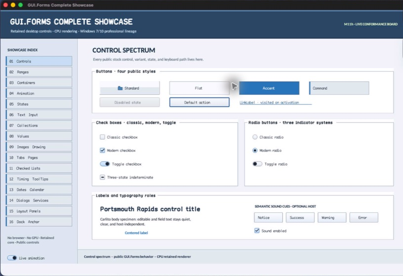

class · library
AcceleratorToken
AcceleratorToken is the move-only revocation handle for one Window accelerator registration whose lifetime is also bounded by its Component owner.
Visual evidence

Ownership and hierarchy
- Hierarchy
- AcceleratorToken
- Declaration
- include/gui_forms/window/window.hpp:107
- Definition
- src/core/window/accelerator/accelerator_token.cpp
Declared methods
AcceleratorToken public
AcceleratorToken() = defaultCreates empty, transfers one attachment on move, prohibits copying, or is privately constructed by Window after registration.
~AcceleratorToken public
~AcceleratorToken()Disconnects any remaining registration.
AcceleratorToken public
AcceleratorToken(AcceleratorToken&& other) noexcept : attachment_(std::move(other.attachment_))Creates empty, transfers one attachment on move, prohibits copying, or is privately constructed by Window after registration.
operator= public
AcceleratorToken& operator=(AcceleratorToken&& other) noexceptRevokes the current registration before accepting a moved attachment.
AcceleratorToken public
AcceleratorToken(const AcceleratorToken&) = deleteCreates empty, transfers one attachment on move, prohibits copying, or is privately constructed by Window after registration.
operator= public
AcceleratorToken& operator=(const AcceleratorToken&) = deleteRevokes the current registration before accepting a moved attachment.
disconnect public
void disconnect() noexceptIdempotently removes the exact accelerator from its Window.
connected public
[[nodiscard]] bool connected() const noexceptReports whether the registration is still eligible for arbitration.
AcceleratorToken private
explicit AcceleratorToken( std::shared_ptr<detail::AcceleratorAttachment> attachment) : attachment_(std::move(attachment))Creates empty, transfers one attachment on move, prohibits copying, or is privately constructed by Window after registration.